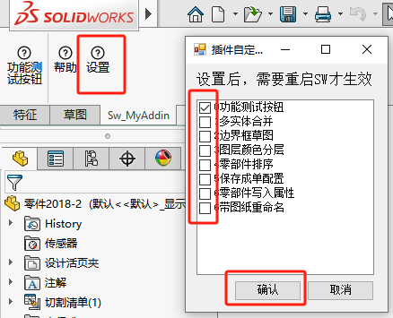
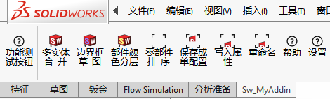

SW_Addin_介绍
1
设置
首次使用时，插件的界面是只有3个命令，我们需要通过【设置】，来开启我们需要的命令。勾选后确认设置。然后重启SW即可。
功能
插件界面
零件
多实体合并
对于一些多实体的零部件，特别是标准件。我们可能不需要花里胡哨的的多实体，就可以进行合并操作。
移除零件特征
异常零件特征，并作成实体特征处理。注意：这个操作会移除参数，是不可逆的
边界框草图
对当前文件的外形生成包围的【边界框】草图。这个草图是可以被选中的。
装配体
零部件排序
对设计树里的零部件名称进行排序
写入属性
对零部件写入图号分离的“方程式”和“属性”。
保存单配置
将多配置的总装配体。那对应配置进行另存（零部件也按当前配置另存成单配置）。
工程图
部件颜色分层
源自于CAD颜色分层的想法。这个功能是将装配体的顶层零部件进行分层，然后设置颜色区分，这有利于导出DWG/DXF格式时，自带部件分层的颜色效果。
重命名
实现重命名零部件时，工程图也随之同步重命名。这样可以保证从零部件界面【打开工程图】的关联性